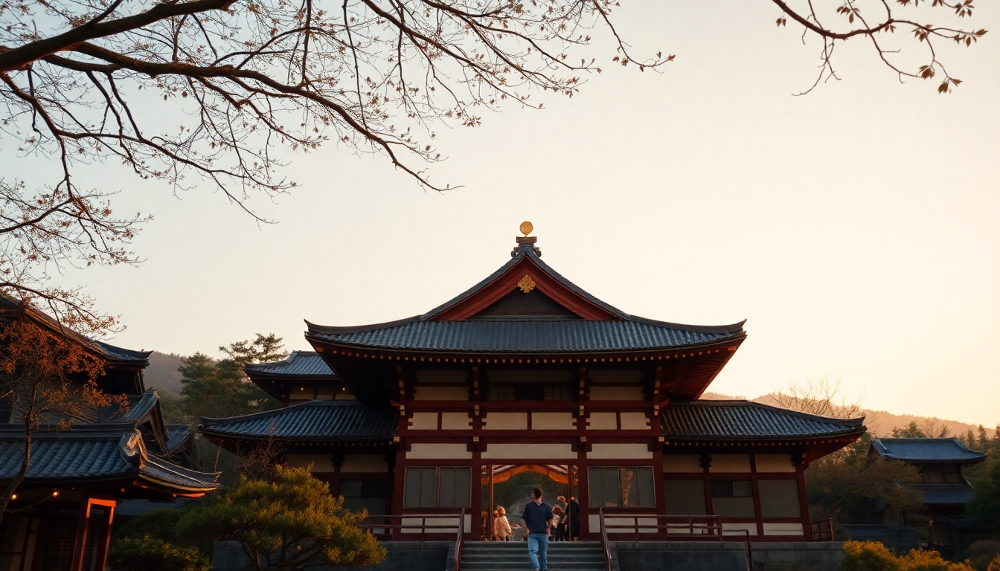

3 Days in Kyoto: Temples, Bamboo & Nara Day Trip

I landed in Kyoto with a vague plan and a packed 72-hour window. Three days turned out to be exactly right for a first-timer who wants the bamboo grove, the red gates, the geisha district, and a side trip to Nara without collapsing from exhaustion. Here’s exactly how I did it — with stops I’d repeat and a few I’d skip.
Is 3 days enough for Kyoto?
Yes, but you have to move. Kyoto’s main attractions are spread across the city and its outskirts, so you’ll rely heavily on the bus system and the JR lines. Three days let you hit the big three: Arashiyama, eastern Kyoto (Gion and Higashiyama), and southern Kyoto (Fushimi Inari). Throw in a half-day to Nara and you’ve got a full, satisfying trip.
We stayed at Hotel Gracery Kyoto Sanjo in the central Kawaramachi area — walkable to Gion and Pontocho Alley, and a short bus ride to the temples. If you prefer trains, the Hankyu Line from Kyoto Kawaramachi Station gets you to Arashiyama in 15 minutes.
What should I do on Day 1 in Kyoto?
Start early at Fushimi Inari Taisha. The famous thousand-torii gates are packed by 9 a.m., so we rolled in at 7:30 and had the lower path almost to ourselves. You don’t need to hike the entire 4-kilometer trail — the first 20 minutes of gates are the most photogenic, and the views from the halfway point are good enough.
- Fushimi Inari — free entry, open 24 hours, best before 8 a.m.
- Tofuku-ji Temple — a 10-minute walk south; quieter, with a stunning Zen garden and a bridge over a maple-tree valley
- Nishiki Market — a covered food market for lunch; try the tamagoyaki (rolled omelet) at Kazariya and the grilled eel skewers
- Pontocho Alley — narrow lantern-lit lane along the Kamo River for dinner; we ate at Isoya, a tiny yakitori spot with no English menu but friendly staff
Skip the Kyoto Imperial Palace unless you’re a history buff — the grounds are nice but the tour is roped-off and regimented.
How do I spend Day 2 in Kyoto — Arashiyama and Gion?
Take the Sagano Scenic Railway (the “Romantic Train”) from Torokko Saga Station to Kameoka for a 25-minute ride along the Hozugawa River. Book tickets a day ahead at the station — they sell out. Then walk back through the Arashiyama Bamboo Grove around 10 a.m., when the crowds are thinner than noon.
- Tenryu-ji Temple — right at the bamboo grove entrance; the garden is better than the temple itself
- Okochi Sanso Villa — a former film star’s estate with a hillside garden and matcha set included in the ¥1,000 entry fee
- Arashiyama Monkey Park Iwatayama — a steep 20-minute climb, but the view of Kyoto from the top is worth it; monkeys roam free and you can feed them from inside a cage
Afternoon: head to Gion. Walk Shirakawa Lane (a narrow preserved street with weeping willows and traditional wooden machiya houses). We caught a glimpse of a maiko (apprentice geisha) hurrying to an appointment around 5 p.m. near Tatsumi Bridge.
- Hanami-koji Street — the main geisha sighting strip; go between 4 and 6 p.m.
- Yasaka Shrine — free, open late, and beautiful lit up at night
- Dinner at Gion Nanba — a small soba shop that serves handmade noodles in a dashi broth; cash only, no reservations
Is a day trip to Nara worth it from Kyoto?
Absolutely. It’s only 45 minutes on the JR Nara Line from Kyoto Station (¥720 one way). We left at 8 a.m. and were back by 3 p.m. with time for a late lunch in Kyoto.
- Nara Park — where the deer bow for crackers (they’re polite but pushy; buy the shika senbei at ¥200 per stack)
- Todai-ji Temple — houses the 15-meter-tall bronze Buddha; the building itself is the largest wooden structure in the world
- Nakatanidou — a mochi shop near the park where they pound the rice cake live; watch the performance, buy a fresh piece
- Kofuku-ji Temple — a five-story pagoda from the 8th century; free to view from outside
Pro tip: skip the Nara National Museum unless you’re a serious art fan. The deer and the Buddha are the stars.
What’s the best way to get around Kyoto?
The Kyoto City Bus is the most practical for temples. A one-day pass costs ¥700 (¥1,100 for the subway + bus combo) and covers most routes. We bought ours at Kyoto Station’s bus information counter.
- JR Pass — not worth activating for Kyoto alone, but useful if you’re coming from Tokyo or going to Osaka
- Hankyu and Keihan Railways — great for Arashiyama and Fushimi Inari respectively
- Taxis — start at ¥600 and add up fast; only use for late-night returns when buses stop (around 11 p.m.)
- ICOCA card — rechargeable and works on all trains, buses, and convenience stores; buy one at any JR station
Avoid renting a bike in central Kyoto — the bus lanes and narrow streets make it stressful, and many temples don’t have bike parking.
Where should I eat in Kyoto?
Kyoto’s food scene is deep, but you don’t need a Michelin star to eat well. Here’s what we actually ate and liked:
- Kichi Kichi Omurice — a tiny counter where a chef performs an omurice (omelet over rice) show; book online weeks ahead
- Omen Kodai-ji — udon noodles in a light sesame broth; the Gion location is quiet and the portion is generous
- Ippudo Nishiki — ramen chain, but the tonkotsu broth is legit; fast and filling
- Kagizen Yoshifusa — a Gion tea house for kuzukiri (transparent jelly noodles in brown sugar syrup); a cool, sweet break
- Nishiki Market food stalls — grab a yuba (tofu skin) skewer and a matcha soft serve for under ¥500 total
Skip the geisha dinner shows — they’re expensive (¥15,000+), rushed, and often touristy. Instead, just walk Gion at dusk.
FAQ
Is it worth visiting Kinkaku-ji (Golden Pavilion)? Yes, but go early. The golden temple reflected in the pond is iconic, and it only takes 30 minutes to see. We arrived at 8:30 a.m. and had the place nearly to ourselves. By 10 a.m., the selfie crowds were thick. It’s on the northwest side of the city, so combine it with Ryoan-ji (the rock garden) for a half-morning.
Do I need to book hotels and tours in advance for Kyoto? For peak seasons (March–May and October–November), yes — book hotels at least two months ahead. We booked Hotel Gracery Kyoto Sanjo three weeks out in April and got the last standard room. For tours, the Sagano Scenic Railway and Kichi Kichi Omurice need reservations days ahead. Everything else (temples, Fushimi Inari, Nara) is walk-in.
Can I see geisha in Gion without a tour? Yes. Stand quietly near Tatsumi Bridge or Hanami-koji Street between 4 and 6 p.m. Maiko and geiko walk to their appointments. Don’t block their path, don’t use flash photography, and don’t chase them. A tour like the Gion Walking Tour gives background, but we saw just as many without paying.
Conclusion
- Start Day 1 at Fushimi Inari before 8 a.m., then explore Nishiki Market and Pontocho Alley at night
- Day 2: take the Sagano Scenic Railway, walk the Arashiyama Bamboo Grove, then spend late afternoon in Gion for geisha spotting
- Day 3: do a half-day trip to Nara for the deer and Todai-ji, then return for a final dinner in Kyoto
- Get an ICOCA card and a Kyoto City Bus one-day pass — they save time and money
- Book Kichi Kichi Omurice and the Romantic Train ahead; everything else is flexible